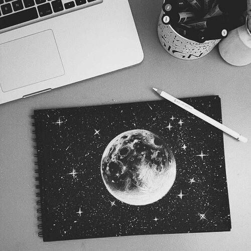

The Power of Art
Art is my quiet language. Through colors and forms, I express emotions that words often fail to capture. Each piece is a moment of reflection — calm, chaotic, or deeply personal.
Creating art allows me to slow down, observe, and transform feelings into something tangible. It is both a release and a mirror.
